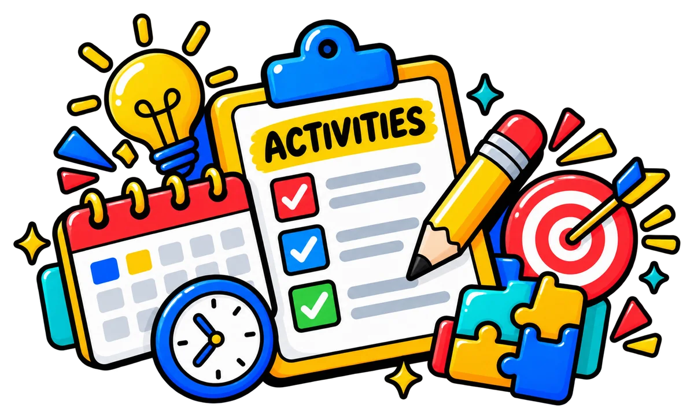

Lab first,
then Vault.
Learn the technique in the Lab before you use it in a full paper.
Ready to put it to work?
Three folders, one order: learn the technique in a Lab, test it in the MUET Vault, then keep it sharp in the Arcade. Tap a folder to open it.

A guided Lab for each paper: see a model, practise with support, then try a fresh task on your own. Every Lab ends with a reflection.
Full MUET-style papers in three levels, from guided practice to exam conditions. Every level is open; the tag shows what we recommend next.
Quick games for one skill at a time, from Warm-up to Exam mode. Tap to play, or use camera mode with hand gestures.
Follow these four habits and every visit moves your band forward.
Learn the technique in the Lab before you use it in a full paper.
Short, regular practice beats one long weekend session.
Missed questions return in 3 days. Clear them before new work.
One 3-minute game wakes your brain before a Lab.
All three levels are open. “Recommended next” glows on the next level once the earlier one shows 4/4; it never locks a level. Personal progress only, with no class leaderboard.